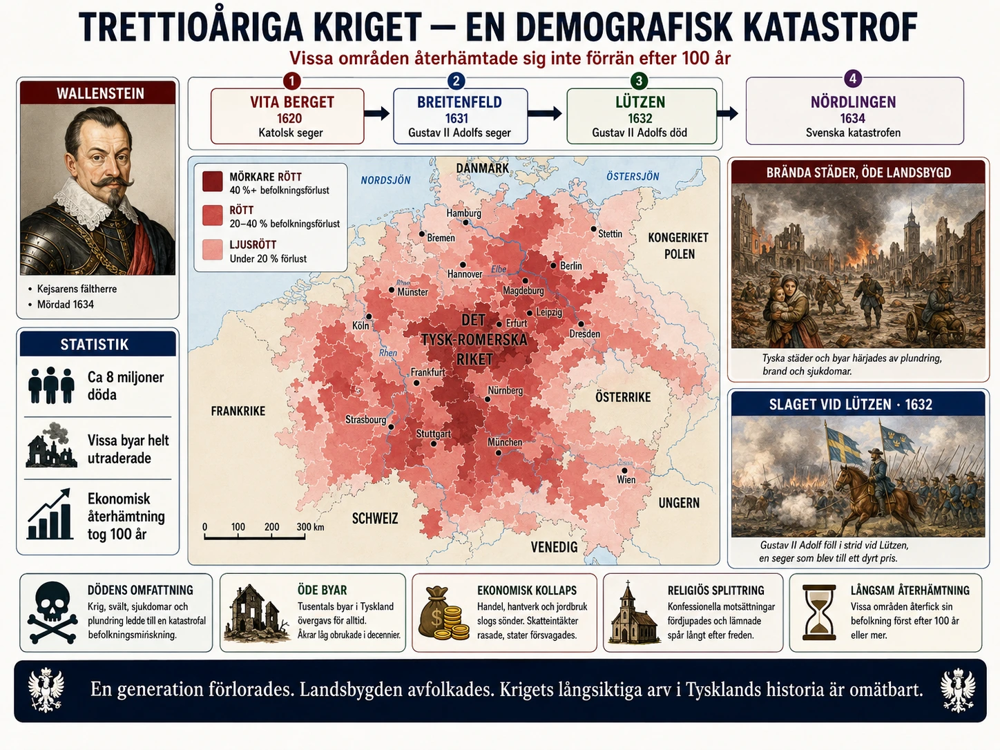

En katastrof som är svår att förstå
I §3B läste du om trettioåriga kriget. Du läste att Tyskland förlorade 20-40 procent av sin befolkning. Det är en siffra. Men siffror säger sällan vad som faktiskt hände.
För människorna som levde då var detta århundradet då världen verkade gå under. Soldater plundrade. Byar brann. Människor dog av svält och sjukdomar. Och bland förödelsen letade människor efter någon att skylla på.
Den här djupdykningen handlar om hur kriget såg ut för dem som levde mitt i det.
Magdeburg 1631 — staden som försvann
För att förstå hur fruktansvärt kriget var räcker det att titta på en händelse: förstörelsen av Magdeburg den 20 maj 1631.
Magdeburg var en stor, rik handelsstad vid floden Elbe. Den hade omkring 25 000 invånare. Som protestantisk stad hade den vägrat öppna sina portar för den katolske kejsarens armé.
I månader belägrade kejserliga trupper under general Tilly staden. Maten tog slut. Människorna inne i staden började svälta. Den 20 maj 1631 lyckades soldaterna äntligen ta sig in genom murarna.
Det som hände sedan kallas en av krigets värsta händelser. Soldaterna gick lös på staden. De brände, plundrade, mördade. Eldarna spred sig snabbt i de trånga gatorna. Innan dagen var slut var Magdeburg en ruinhög. Av 25 000 invånare hade kanske 5 000 överlevt.
Berättelser från överlevande var fasansfulla. Soldater hade dödat människor på gatorna, brutit sig in i hem, satt eld på kyrkor med människor inuti. Vid Elbes vattenkant låg lik så tätt att vattnet sägs ha varit rött i flera dagar.
Magdeburgs öde chockade hela Europa. Pamfletter och flygblad om förstörelsen trycktes och spreds. Ordet "magdeburgisera" började användas för värsta tänkbara förstörelse. Det är delvis denna händelse som fick svenske kungen Gustav II Adolf att gå in i kriget med full kraft för att skydda protestanterna.
Hur soldaterna fungerade
För att förstå varför Magdeburg blev så fruktansvärt måste vi förstå hur 1600-talets arméer fungerade.
På den här tiden hade kungar och kejsare sällan råd att betala sina soldater regelbundet. Lönerna kom oregelbundet eller inte alls. Istället räknade härförarna med att soldaterna skulle "leva av landet" — alltså ta vad de behövde från områdena de marscherade genom.
Detta innebar att en armé som drog förbi en by inte var en olycka. Den var en katastrof. Soldaterna tog:
- Mat och boskap från bönderna
- Pengar och värdesaker från hem
- Vapen, hästar och redskap
- Ibland kvinnor och barn som tvångsarbetare
Om en stad gjorde motstånd och sedan föll, fick soldaterna ofta tre dagar att plundra fritt som "belöning". Det var det som hände i Magdeburg.
Vissa härförare blev rika på systemet. Den mest kända var Albrecht von Wallenstein, en böhmisk adelsman som byggde upp en privat armé på upp till 100 000 soldater. Han var själv inte särskilt religiös — han slogs för pengar och makt. Hans armé fungerade som ett företag. Soldater anställdes, områden plundrades, vinster togs ut. Kriget hade blivit en industri.
Pestens roll
Det var inte bara strider som dödade människor under trettioåriga kriget. Sjukdomar var minst lika dödliga.
Pesten — som hade härjat Europa sedan digerdöden 1347 — kom tillbaka i våg efter våg under kriget. Soldater spred den från by till by. Människor som hade flytt sina hem och samlats i trånga städer dog i tusental.
Andra sjukdomar var lika farliga. Tyfus spreds från soldaternas läger. Dysenteri dödade människor som drack förorenat vatten. När skördarna förstörts av plundring kom svält, och svältande människor är mer mottagliga för sjukdomar.
Historiker tror att fler människor dog av svält och sjukdomar än av strider under kriget. Det är ett mönster som har följt krig i hela historien — det är inte stridsskador som dödar flest, utan följderna.
Häxprocesserna ökar
En av krigets mest fasansfulla effekter var att häxprocesserna ökade dramatiskt.
Häxor — människor som påstods ha gjort pakt med djävulen — hade förföljts i Europa sedan medeltiden. Men under och efter trettioåriga kriget exploderade antalet processer. Områden som drabbats hårdast av kriget hade också flest häxprocesser.
Varför? Forskare har flera förklaringar.
När människor lider söker de förklaring. När bynas skördar förstörs gång på gång, när barn dör i pesten, när familjer splittras av soldater — då söker människor efter någon att skylla på. Tanken på att en granne är häxa och orsakar olyckorna ger en känsla av kontroll. Om man bara hittar och dödar häxan blir allt bra igen.
Det fanns gamla grannfejder att lösa. En anklagelse om häxeri kunde användas för att bli av med en obekväm granne. En tigger som kommit till dörren och varit otacksam. En kvinna som kunde örtmedicin och som du var avundsjuk på. En äldre änka som inte hade någon att försvara sig.
Kyrkorna var i kris. Både katolska och protestantiska präster hade tappat förtroende efter krigets förödelse. För att visa att de fortfarande hade auktoritet anslöt de sig till häxjakten. Att hitta och bränna en häxa visade att kyrkan fortfarande kämpade mot ondskan.
De flesta som anklagades för häxeri var kvinnor — kanske 80 procent. Många var äldre, fattiga, ensamstående. Vid totalsumman dödades i Europa mellan 40 000 och 60 000 människor för häxeri mellan 1400-talet och 1700-talet. Toppen av processerna kom under och efter trettioåriga kriget.
Sverige drabbades senare av samma fenomen — den stora häxhysteran 1668-1676 ledde till hundratals avrättningar. Den hände efter att Sverige varit djupt involverat i stora europeiska krig under flera generationer.
Det förödda Tyskland
När kriget slutligen tog slut 1648 var Tyskland förändrat för alltid. Siffrorna är svåra att räkna exakt, men ungefärligt:
- Befolkningen hade minskat från cirka 16-17 miljoner till 10-11 miljoner — en förlust på cirka 40 procent
- I särskilt drabbade områden som Pommern och delar av Sachsen dog mellan 50 och 70 procent av befolkningen
- Hela byar låg öde — efter kriget rapporterades att vissa områden hade halverats i antal byar
- Städer hade förlorat hälften eller mer av sina invånare
För att sätta detta i perspektiv: andra världskriget kostade Tyskland ungefär 10 procent av befolkningen. Trettioåriga kriget kostade fyra gånger så mycket. Forskaren Peter Wilson har räknat att kriget var den värsta katastrofen i Europas historia före världskrigen.
Det dröjde över hundra år innan Tysklands befolkning återhämtade sig till krigsförnivå. Vissa områden återhämtade sig aldrig på samma sätt — de förblev glesare befolkade än innan ända in på 1800-talet.
Vad detta lär oss
Vad ska du ta med dig från den här djupdykningen?
För det första: siffror i historieböcker är människor. När vi läser "Tyskland förlorade 40 procent av sin befolkning" är det miljontals individuella personer. Mammor som såg sina barn dö. Bönder som flydde sina hem. Människor som svalt ihjäl bredvid plundrade åkrar.
För det andra: stora krig dödar inte mest med vapen. Pesten, svälten och sjukdomarna som följer kriget dödar fler. Detta är ett mönster som följt krig genom hela historien.
För det tredje: i kristid söker människor efter syndabockar. När verkliga problem inte kan lösas blir det lätt att hitta en fiktiv fiende — häxor, främlingar, minoriteter. Det är ett mönster vi behöver känna igen även idag.
Och slutligen: trettioåriga kriget visade Europa att religion som politisk drivkraft är livsfarlig. När människor är beredda att döda och dö för sin tro blir konsekvenserna fruktansvärda. Det är en av anledningarna till att Westfaliska freden 1648 försökte separera staten från religionen. Det blev början på en värld där tro skulle vara en privat sak, inte en politisk.
Det är en lärdom som tog Europa hundratals år att bygga vidare på. Och det är en lärdom som kostat miljontals människoliv.